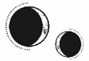

CAPÍTULO 18
Todo se nubló a su alrededor. Stroud dejó de tenerla paralizada cuando Ferron se excusó, pero Helena permaneció inmóvil.
El sonido áspero y chirriante del bolígrafo de Stroud al rozar el papel era lo único que se oía en la habitación.
A Helena se le había secado la boca, pero consiguió tragar saliva, mientras pensaba alguna forma de revertir lo que acababa de pasar.
Flexionó los dedos y acarició las sábanas de lino para concentrarse en las sensaciones externas. Se le escapó un gemido.
Pensó en gritar, en gritar y gritar sin parar.
—¿Qué sucede? —preguntó Stroud, levantando la vista del expediente médico de Helena.
La chica la miró fijamente.
—Pensé que estarías contenta de que te diéramos un respiro de la transferencia. Con la resistencia que estás mostrando, lo más probable es que tu hígado falle antes de que termine el año. —Stroud tamborileó los dedos sobre el expediente de Helena—. Soy muy exigente con los alquimistas en mi programa. La guerra nos privó de unos linajes muy valiosos. Deberías estar agradecida de que te dejemos participar en algo de tanta relevancia.
—Vas a hacer que me violen ¿y esperas que esté agradecida? —La voz de Helena sonaba apagada, como si llegara desde muy lejos.
La expresión de Stroud se endureció.
—Te estoy dando la oportunidad de que tu vida tenga algún sentido.
La rabia que sentía Helena era lo único que le impedía perder la cabeza.
—Si es algo tan maravilloso, me extraña que no te presentes voluntaria.
Stroud permaneció inmóvil; la rabia se extendió como un rayo por todo su rostro, oscureciendo todas las arrugas. Helena se preparó para el golpe, pero Stroud se limitó a fruncir los labios en una sonrisa tensa y se inclinó sobre Helena con un gesto casi tierno.
—El Sumo Inquisidor lleva casado más de un año y no ha producido ningún hijo. Su Eminencia insiste en que Ferron sea el primer candidato, pero dudo que eso dé resultado. Después de todo lo que le hizo Bennet, no entra dentro de lo que yo calificaría como humano. Cuando lo haya intentado, volverás a la Central, y seré yo quien decida cuál será el siguiente. Durante el tiempo que haga falta.
A Helena se le heló la sangre. Stroud le tocó la frente con la punta de un dedo.
—Con eso en mente, creo que harías bien en vigilar esa lengua que tienes. No vaya a ser que la pierdas.
Helena no emitió sonido alguno hasta que Stroud se marchó. El terror se extendió por su cuerpo como si fuera un veneno, devorando sus órganos, quemándole los pulmones. Deambuló por toda la casa, comprobó si todas las puertas estaban cerradas, desesperada por encontrar algo, cualquier resquicio de esperanza. Tenía que haber algo.
Ferron no apareció hasta la noche siguiente. Mantuvo el gesto impertérrito, pero parecía que sus ojos se desviaban, incapaz de sostenerle la mirada.
A Helena empezaron a temblarle las manos, como si sufriera un ataque nervioso.
—No es esta noche —le comunicó sin más—. Según me han dicho —seguía sin mirarla—, no serás fértil hasta dentro de tres días.
No le sorprendió. Ferron era un asesino y un nigromante. ¿Por qué pensó que estaría por encima de esto?
Pero, aun así, de una forma irracional, pensaba que estaría a salvo… con él.
Estúpida.
—Acércate —le ordenó.
Helena caminó en modo automático, con la vista fija en los botones de su abrigo y su camisa. Ferron estiró la mano y le sujetó la barbilla. Sintió el roce del cuero de sus guantes cuando le levantó la cara para mirarla a los ojos.
—¿Cuánto ves? —preguntó, pasando la vista de un ojo a otro para compararlos.
Helena se echó a reír.
No recordaba cuándo había reído por última vez. Hacía casi una vida. Pero la pregunta era graciosa. Desternillante, incluso.
Todo lo bueno que había tenido en la vida estaba destruido, le habían arrancado cualquier atisbo de consuelo, y ya no quedaba nada de ella, salvo sufrimiento. La habían encarcelado y violado de casi todas las formas imaginables, y ahora iba a infligirle esta última atrocidad, pero él se preocupaba por su visión.
Rio y rio, y, cuando dejó de reír, se echó a llorar. Estuvo llorando hasta que empezó a temblar, meciéndose hacia delante y hacia atrás, casi gritando. Ferron se limitó a esperar.
Helena no paró hasta que se sintió vacía, como si hubiera expulsado todo lo que tenía dentro y lo único que quedase fuera un cascarón hueco. Estaba harta de existir.
—¿Te sientes mejor?
La chica tragó saliva; le dolía la garganta.
—No.
Se percató de que a Ferron le temblaban los dedos, que los cerraba en un puño y los escondía detrás de la espalda. Reconocía ese gesto.
Levantó la vista para mirarlo y se fijó en la palidez de su piel y en su rostro macilento. Bueno, al menos los dos estaban sufriendo.
—¿Por qué te han torturado esta vez? —preguntó con aparente indiferencia, aliviada de pensar en algo, en cualquier otra cosa.
Ferron suspiró.
—Por varias razones. Como suelen recordarme, soy una decepción constante. Además, la gente, en su habitual perspicacia, ha deducido que soy el Sumo Inquisidor.
Esa noticia despertó su curiosidad.
—¿Fue porque mataste a Lancaster?
—Supongo que tuvo que ver. Tampoco ayudó demasiado la pataleta de Aurelia. Tuve que marcharme sin previo aviso, y el Sumo Inquisidor debía estar presente. Los periódicos internacionales no se lo piensan demasiado antes de publicar ese tipo de teorías, así que se ha extendido la noticia. Pronto me nombrarán sucesor del Sumo Nigromante. —Compuso una sonrisa de dolor—. El anonimato del que gozaba era para protegerme, ¿sabes?
—Por supuesto —replicó Helena—. Entonces solo te han torturado un poquito.
—No ha sido nada —dijo Ferron, pero tenía ambas manos detrás de la espalda.
Se movió, como si estuviera a punto de marcharse. Aunque Helena no quería estar cerca de él, la alternativa de quedarse a solas con sus pensamientos le parecía aún peor.
—¿Por qué mataste a Lancaster? —preguntó.
—Puso en peligro mi misión. Lo habría ejecutado de forma oficial, pero estaba ocupado y quería quitarlo de en medio.
—¿Y por eso lo mataste en el hospital a la vista de todos? —insistió Helena con escepticismo.
—Pensaba matarlo en su habitación del hospital, pero intentó huir. —Ferron se encogió de hombros—. Improvisé.
La imagen de Lancaster abierto en canal mientras Ferron lo destripaba estaba grabada a fuego en la mente de Helena.
El Sumo Inquisidor ladeó la cabeza.
—Si no tienes más preguntas, deberíamos acabar con esto. ¿En el sofá o en la cama?
Las palabras la golpearon como una barra de acero en plena espalda, y tardó un instante en comprender que se refería a revisar sus recuerdos.
Había dado por hecho que eso se habría acabado.
—Pensé…
¿Qué pensaba? ¿Que no seguía siendo una prisionera y que, a cambio de su cuerpo, dejarían su mente en paz? Se tragó las palabras y fue hacia el sofá.
Ferron la siguió, impasible, y extendió la mano. Apenas le había rozado la frente con los dedos cuando su resonancia penetró en su cráneo.
Para cuando terminó, Helena sintió que iba a desfallecer. Revivir los últimos días le hizo apretar la mandíbula con tanta fuerza que parecía que se le iban a romper los dientes.
Se derrumbó en el sofá; la amenaza de Stroud seguía resonando en su cabeza.
Hundió la cara en la tela del sofá, que olía a viejo y a polvo, e intentó camuflar el sonido del mundo exterior. Ferron se marchó sin decir una palabra.
El ojo de Helena se había recuperado lo suficiente para soportar la luz, así que retiró las cortinas; desde su nueva habitación se veía más el jardín que las montañas. En una semana, el mundo había cambiado, y ya se apreciaban los primeros signos de la primavera. El gris apagado al que estaba acostumbrada comenzaba a mostrar pinceladas de color entre la hierba tumbada y las ramas de los árboles.
Una semana antes, eso le habría proporcionado algo de consuelo, pero ahora había un pozo en su interior que transformaba toda belleza en horror.
Dos días. Sus pensamientos se repetían en un bucle infinito, como un animal enjaulado dispuesto a arrancarse las extremidades a bocados para intentar escapar.
Durante la guerra, el riesgo de ser violada siempre estuvo presente. Circulaban historias sobre las prisioneras de los laboratorios, advertencias sobre lo que podría pasarles a las mujeres que capturaban en territorio de la Resistencia. Pero, aun así, violarlas con el propósito de dejarlas embarazadas añadía una crueldad que no era capaz de asimilar.
Sus experiencias con los embarazos no habían sido agradables.
Las medidas anticonceptivas escaseaban durante la guerra. De vez en cuando aparecían chicas en el hospital que pedían, nerviosas, hablar con la enfermera Pace. Normalmente ahí acababa la cosa, pero a veces tenían que volver una y otra vez.
Helena había sido hija única. Su madre, boticaria, se dedicaba a prevenir embarazos, mientras que las matronas del pueblo se encargaban de todo lo demás. Solo cuando las cosas se torcían, las madres acudían a un cirujano como su padre. La mayoría de los bebés que Helena vio cuando era niña nacían deformes, gravemente enfermos o mortinatos.
Y así continuó durante la guerra. Al ser sanadora, a Helena solo la llamaban cuando un bebé nacía prematuramente o cuando se atascaba en una posición indebida, o también cuando la madre no producía leche porque no había comida suficiente. Le preguntaban siempre si había algo que pudiera hacer. En la mayoría de los casos, no podía ayudar. Los bebés eran demasiado pequeños y frágiles, y ni siquiera la vivemancia podía arreglarlo todo.
Tuvo que ser testigo de cómo las madres se desmoronaban, como si un seísmo las partiera por dentro. A veces gritaban, otras se sumían en el silencio y, en ocasiones, eso era aún peor.
Helena siempre agradeció no haber tenido que pasar por eso. No podía casarse ni tener hijos, así que nunca tendría que soportar una pérdida así.
Era lo único de lo que estaba a salvo, o eso pensaba.
Se tumbó en la cama, pero no lograba conciliar el sueño. Lumitia se estaba acercando a su sublimación semestral, y resplandecía con tal intensidad que cubría toda la noche de plata, una luz que contrastaba con la negrura. Hasta el aire vibraba con una resonancia constante.
Helena flexionó los dedos y deseó poder introducir la mano en su cuerpo con la misma facilidad que Ferron había atravesado el estómago de Lancaster. Si pudiera, se arrancaría ahí mismo las entrañas.
Solo de pensar que su cuerpo no tenía más opción que obedecer le provocaba náuseas. Sin embargo, la idea de no quedarse embarazada la paralizaba de miedo. La amenaza de Stroud aún resonaba en su mente.
Se sintió culpable al pensar si debía resistirse o si era mejor cooperar para que todo fuera menos terrible. Estaba a punto de perder la cabeza. Si el destino era inevitable, solo podía prepararse para lo horrible que sería el viaje.
La noche se alargó como una lija raspándole la piel, hasta dejarla en carne viva.
Cuando Ferron entró en la habitación, se le escapó un grito ahogado y estuvo a punto de echarse a llorar.
Al verla, el Sumo Inquisidor pareció querer darse la vuelta y marcharse.
Helena hizo amago de extender la mano, pero la apartó de inmediato y apretó los dedos en un puño. Ese movimiento bastó para retenerlo.
Ferron la miraba a ella y luego a la puerta, dudando, como si todavía estuviera decidiendo. ¿Y si se negaba y permitía que Stroud se la llevara?
La habitación comenzó a dar vueltas. Ya no sentía las manos.
Si Ferron quería marcharse, lo permitiría. Se iría a la Central. No sería tan cómplice como para suplicarle que se quedara.
No lograba descifrar las emociones de su rostro. Era imperturbable, como si no estuviera del todo presente.
Al final, se dio la vuelta. Helena no sabía si llorar o reír ante el hecho de que esto fuera lo único a lo que no estaba dispuesto a acceder. La única orden que se negaría a cumplir. Al fin y al cabo, ahora que todos sabían que era el Sumo Inquisidor, Morrough no podría matarlo.
Ferron sacó una cajita de estaño del bolsillo y se puso algo bajo la lengua.
—Cama —espetó sin mirarla.
Helena no se movió.
Él le dedicó una mirada apagada.
—Espera. —Extendió las manos, como si pudiera mantenerlo alejado—. ¿Y si me matas? —preguntó con voz temblorosa—. Ahora puedes hacerlo. Me dijiste que todo el mundo sabe que eres el Sumo Inquisidor. Morrough no podría justificar tu asesinato por mi culpa. Yo no soy nadie.
Ferron le prestó entonces más atención. Por un instante, se lo planteó. Helena se fijó en sus ojos calculadores y en ese momento se le aceleró el pulso.
—Puedo hacerlo yo misma, si quieres, para que Morrough no se dé cuenta —se ofreció—. Dame algo. No tiene que ser fácil ni rápido, puede ser algo pequeño. Podrías decir que te lo dejaste por ahí y…
Helena supo de inmediato que se había equivocado. La expresión de Ferron se endureció, sus ojos se apagaron, y volvió a apartar la mirada.
—Cama —repitió, esta vez con los dientes apretados.
La chica dejó caer las manos a los costados. Se dio la vuelta lentamente y se acercó a la cama, sintiendo una terrible desconexión de su cuerpo. Se mordió el labio inferior, más y más fuerte, para sentir algo. Notó la sangre en la lengua cuando se tumbó, pero su cuerpo permaneció entumecido.
Poco después, Ferron se acercó y simplemente se quitó el abrigo.
Helena se puso en tensión en cuanto se acercó, tratando de no rechinar los dientes.
El Sumo Inquisidor mantenía una expresión dura como el granito, pero se colocó a los pies de la cama con la vista clavada en el cabecero.
—Cierra los ojos —le ordenó.
Helena se obligó a obedecer e intentó centrarse en respirar. «No pienses». Percibía su olor en la habitación, el aroma a enebro, metal y a descomposición de la casa.
El colchón se hundió a su derecha. Se le encogió el pecho y empezó a respirar más rápido.
—No… no abras los ojos.
Los mantuvo cerrados con fuerza. Se hizo un silencio mientras él le levantaba la falda hasta las caderas y le quitaba la ropa interior. Helena creyó que se le paraba el corazón.
Oyó que Ferron tomaba aire. Sentía su cuerpo cerca.
—Respira —le dijo al oído izquierdo.
Notó algo entre las piernas, húmedo y resbaladizo. Se encogió instintivamente, pero pronto se dio cuenta de que era lubricante.
Helena dio una bocanada de aire y apretó tanto los ojos que le dolieron. Entonces sintió el peso de Ferron contra sus caderas.
Se atragantó con un sollozo incoherente.
Cerró los ojos con más fuerza. Su mente se desperdigó, como si buscara una escapatoria. En el tanque de suspensión, había aprendido a evadirse justo cuando estaba a punto de perder la cabeza.
Así había sobrevivido, ella sola había aprendido a resistir.
Pero ahora no lograba escapar de la misma forma.
Estaba atrapada en su propio cuerpo, como si alguien hubiera atado su consciencia.
«Esto es mejor que la Central», se recordó a sí misma, esforzándose para no hiperventilar, para no arañar, gritar y quitárselo de encima.
Se le contrajo el pecho. Las lágrimas le caían por el rabillo del ojo.
«Es mejor que la Central».
¿Y si esto no salía bien? ¿Y si Stroud tenía razón sobre él y ni siquiera era posible, pero Helena hubiera cooperado igualmente? ¿Y si todo esto no servía de nada?
Se le escapó un grito ahogado de pánico; no pudo evitar encogerse cuando Ferron la embistió por última vez.
Desapareció tan rápido que fue como si se esfumara.
Helena abrió los ojos y él ya no estaba. El violento sonido de alguien vomitando proveniente el baño.
Al cabo de un rato, oyó la cisterna del váter y el agua del grifo, que corrió durante unos minutos.
Tuvo fuerzas para bajarse la falda, pero no consiguió moverse más allá de eso. Tenía el cuerpo dormido.
«Se ha acabado», se repetía una y otra vez para intentar tranquilizarse, pero su cuerpo no cesaba de temblar. Las uñas habían dejado surcos con forma de medialuna en la palma de las manos.
Cuando Ferron salió del baño, ya no mantenía un semblante tenso, como si no pudiera seguir fingiendo. Tenía el rostro hundido y los ojos hinchados y enrojecidos.
Parecía extrañamente mortal, y Helena deseó con toda su alma que no lo fuera.
Apartó la mirada.
Ferron cruzó la habitación en silencio, recogió el abrigo y se marchó.
Helena se sentó en la cama poco a poco, tratando de no sentir su cuerpo.
Fue al baño, abrió el grifo de la ducha y se acurrucó bajo el chorro de agua con la ropa puesta. Cuando el agua comenzó a enfriarse, permaneció inmóvil, sin apenas moverse.